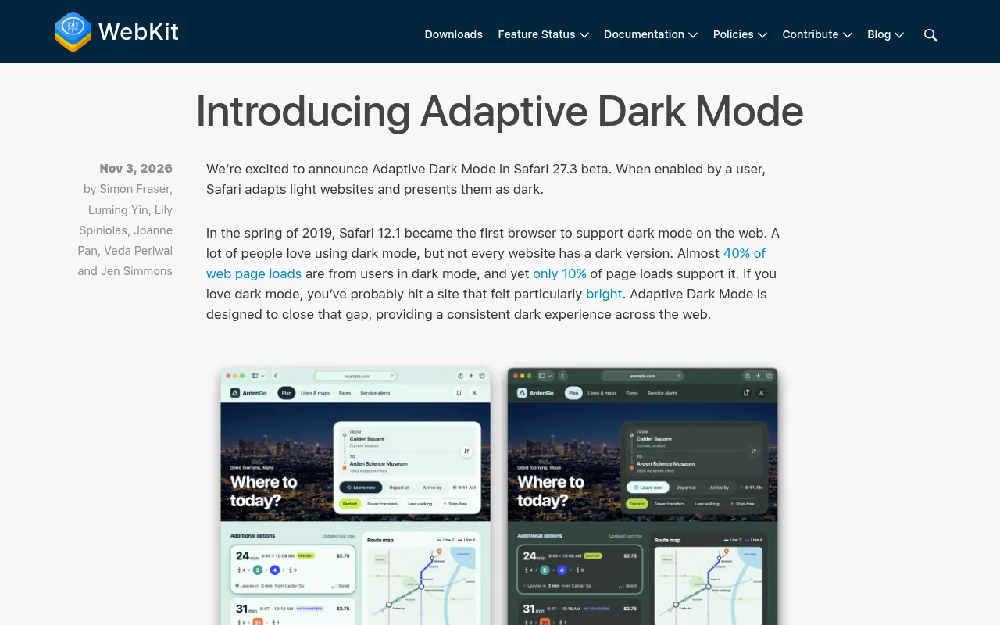
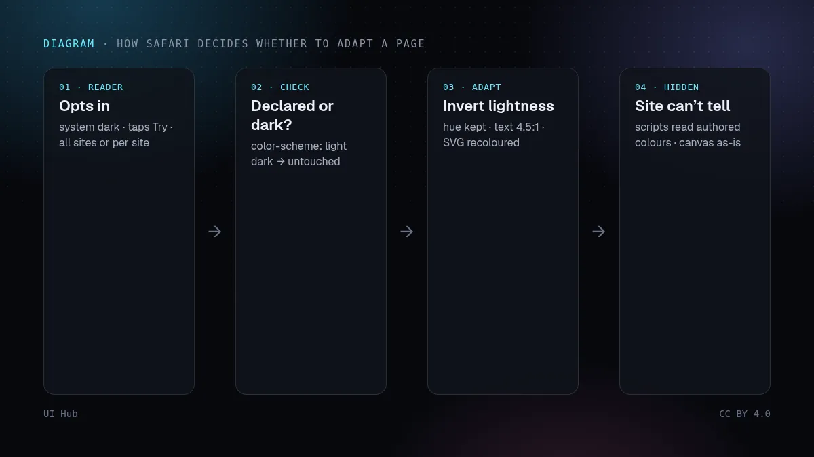
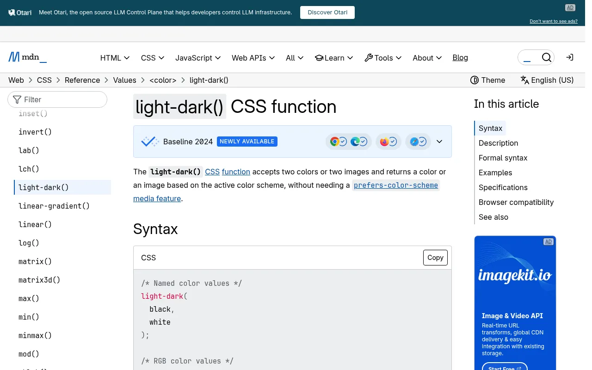

11 月 3 日，WebKit 团队在 Safari 27.3 测试版中发布了自适应深色模式（Adaptive Dark Mode）。如果读者把系统设为深色，又打开了一个很亮的页面，Safari 会提供预览和一个「Try」按钮；据 MacRumors 报道，试用一次之后，可以选择对所有网站开启，或者逐个网站开启。开启后，Safari 会把浅色页面重新着色成深色。WebKit 给出的理由是它自己测到的差距：将近 40% 的页面加载来自使用深色模式的用户，但只有大约 10% 的页面加载支持深色模式。MacRumors 称，带有这项功能的系统更新预计在 12 月推出。

对设计师来说，关键不在功能本身，而在它的触发条件：如果你的网站没有声明支持深色模式，浏览器引擎现在会按它自己的规则，给你的部分读者生成一个深色版本，而你无法看到这件事发生了。
color-scheme meta 标签，或在 CSS 里写了 color-scheme: light dark；本来就以深色背景、浅色文字为主的页面也不受影响。mix-blend-mode 可能会被停用；<canvas> 里的内容保持原样。
WebKit 文档里让页面或某个元素保持浅色的方法是 color-scheme: light only（或在 meta 标签里写 light only）。但在 Safari 27.3 测试版 1 中，only 关键字还不支持。于是出现一个诱人的捷径：声明 light dark，让 Safari 别管你。如果没有真正的深色样式，不要这样做。这个声明是在告诉所有浏览器「我自己处理深色模式」，于是表单控件、滚动条、默认页面背景这些浏览器自带的部分会跟随读者的深色偏好，而你写死的浅色仍然是浅色。你等于用一个自己造成的「深浅混搭」页面，换掉了 Safari 尝试生成的深色页面。
自动生成的深色主题是底线，不是设计。在半夜，它大概比一个刺眼的白页面好，WebKit 显然也在对比度上下了功夫。但它替你做了本该由设计师做的决定：品牌色在明度翻转后会变得多浅、哪些表面应该浮在其他表面之上、一张自带白底的图片会不会像贴上去的。而且这种变化对脚本不可见，你在数据分析里看不到，监控工具截的图里也看不到；只有你自己用 Safari 打开页面时才会看到。
好消息是，做一个真正的深色主题比以前便宜多了。light-dark() 让一个 Token 同时保存两种取值，color-mix() 可以推导出悬停色和边框色，把散落各处的十六进制颜色值整理成 Token 这类机械工作，大部分可以交给编程智能体。剩下的设计工作才是值得亲手做的：选定深色色板、检查对比度、决定哪些地方必须保持浅色。
light-dark() 写出两种取值，并在 HTML head 里声明 color-scheme: light dark，不要等 JavaScript 稍后注入。color-scheme: light only，等后续测试版支持 only 后再测一遍。mix-blend-mode 效果不会被适配，或者可能被关掉，它们需要自己的深色版本。light dark 当作退出开关。/* 在 <head> 中：<meta name="color-scheme" content="light dark"> */
:root {
color-scheme: light dark;
--bg: light-dark(#f7f7f5, #0e0f13); /* 页面背景 */
--surface: light-dark(#ffffff, #171922); /* 卡片表面 */
--ink: light-dark(#111318, #eceef4); /* 正文 */
--muted: light-dark(#4b5162, #a4abbd); /* 次要文字 */
--accent: light-dark(#2453d6, #8aa8ff); /* 强调色 */
--line: color-mix(in oklch, var(--ink) 14%, transparent);
}
body { background: var(--bg); color: var(--ink); }
/* 必须保持浅色的区域（等 Safari 支持 "only" 后生效） */
.product-photos, .brand-art { color-scheme: light only; }
亲手做深色主题的基础，先看把暗色模式做对；搭建色板本身，请看 OKLCH 色彩与深色模式；用 面向智能体的设计 Token 把 Token 放在智能体读得到的地方。在两种主题下都用 AI 生成界面的无障碍检查过一遍对比度和焦点。如果你的首屏用了 canvas 或着色器，上线着色器背景一文讲了你需要的备用方案，因为 Safari 不会改动 canvas 里的内容。